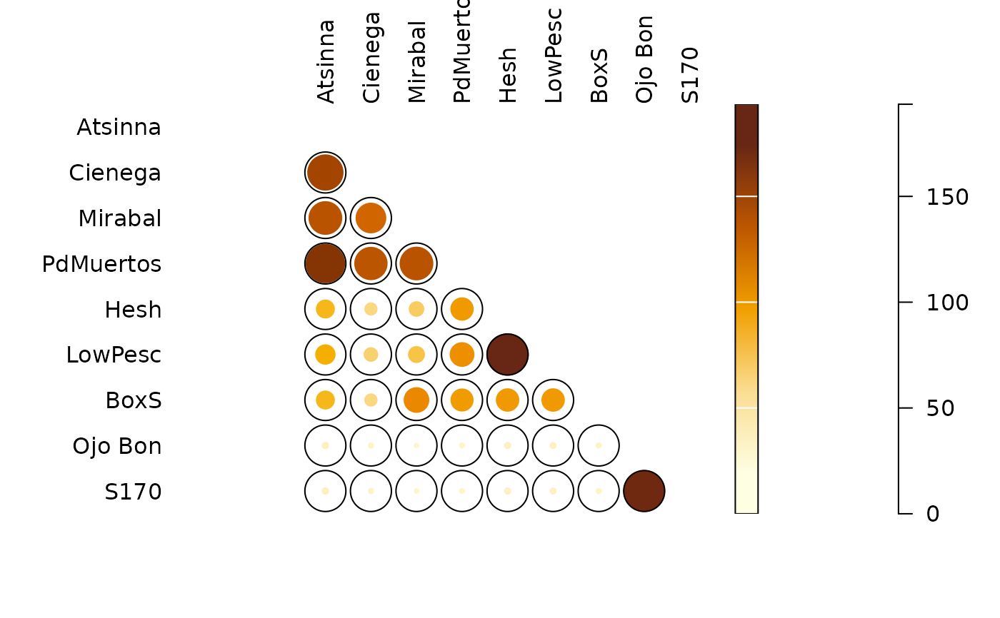

Similarity
Usage
similarity(object, ...)
index_jaccard(x, y, ...)
index_sorenson(x, y, ...)
index_bray(x, y, ...)
index_morisita(x, y, ...)
index_brainerd(x, y, ...)
index_binomial(x, y, ...)
# S4 method for matrix
similarity(
object,
method = c("brainerd", "bray", "jaccard", "morisita", "sorenson", "binomial")
)
# S4 method for data.frame
similarity(
object,
method = c("brainerd", "bray", "jaccard", "morisita", "sorenson", "binomial")
)
# S4 method for character,character
index_jaccard(x, y)
# S4 method for logical,logical
index_jaccard(x, y)
# S4 method for numeric,numeric
index_jaccard(x, y)
# S4 method for logical,logical
index_sorenson(x, y)
# S4 method for numeric,numeric
index_sorenson(x, y)
# S4 method for numeric,numeric
index_bray(x, y)
# S4 method for numeric,numeric
index_morisita(x, y)
# S4 method for numeric,numeric
index_brainerd(x, y)
# S4 method for numeric,numeric
index_binomial(x, y)Arguments
- object
A \(m \times p\)
numericmatrixordata.frameof count data (absolute frequencies giving the number of individuals for each category, i.e. a contingency table). Adata.framewill be coerced to anumericmatrixviadata.matrix().- ...
Currently not used.
- x, y
A length-\(p\)
numericvector of count data.- method
A
characterstring specifying the method to be used (see details). Any unambiguous substring can be given.
Value
similarity()returns a stats::dist object.index_*()return anumericvector.
Details
\(\beta\)-diversity can be measured by addressing similarity between pairs of samples/cases (Brainerd-Robinson, Jaccard, Morisita-Horn and Sorenson indices). Similarity between pairs of taxa/types can be measured by assessing the degree of co-occurrence (binomial co-occurrence).
Jaccard, Morisita-Horn and Sorenson indices provide a scale of similarity from \(0\)-\(1\) where \(1\) is perfect similarity and \(0\) is no similarity. The Brainerd-Robinson index is scaled between \(0\) and \(200\). The Binomial co-occurrence assessment approximates a Z-score.
binomialBinomial co-occurrence assessment. This assesses the degree of co-occurrence between taxa/types within a dataset. The strongest associations are shown by large positive numbers, the strongest segregations by large negative numbers.
brainerdBrainerd-Robinson quantitative index. This is a city-block metric of similarity between pairs of samples/cases.
braySorenson quantitative index (Bray and Curtis modified version of the Sorenson index).
jaccardJaccard qualitative index.
morisitaMorisita-Horn quantitative index.
sorensonSorenson qualitative index.
References
Brainerd, G. W. (1951). The Place of Chronological Ordering in Archaeological Analysis. American Antiquity, 16(04), 301-313. doi:10.2307/276979 .
Bray, J. R. & Curtis, J. T. (1957). An Ordination of the Upland Forest Communities of Southern Wisconsin. Ecological Monographs, 27(4), 325-349. doi:10.2307/1942268 .
Kintigh, K. (2006). Ceramic Dating and Type Associations. In J. Hantman and R. Most (eds.), Managing Archaeological Data: Essays in Honor of Sylvia W. Gaines. Anthropological Research Paper, 57. Tempe, AZ: Arizona State University, p. 17-26.
Magurran, A. E. (1988). Ecological Diversity and its Measurement. Princeton, NJ: Princeton University Press. doi:10.1007/978-94-015-7358-0 .
Robinson, W. S. (1951). A Method for Chronologically Ordering Archaeological Deposits. American Antiquity, 16(04), 293-301. doi:10.2307/276978 .
See also
Other diversity measures:
heterogeneity(),
occurrence(),
rarefaction(),
richness(),
simulate(),
turnover()
Examples
## Data from Huntley 2004, 2008
data("pueblo")
## Brainerd-Robinson measure
(C <- similarity(pueblo, "brainerd"))
#> Atsinna Cienega Mirabal PdMuertos Hesh LowPesc BoxS
#> Cienega 164.36782
#> Mirabal 152.38095 138.09524
#> PdMuertos 179.31034 150.57471 152.38095
#> Hesh 82.75862 55.55556 66.66667 103.44828
#> LowPesc 89.21023 62.00717 73.11828 109.89989 193.54839
#> BoxS 82.75862 55.55556 114.28571 102.17114 103.70370 103.70370
#> Ojo Bon 27.58621 22.22222 19.04762 20.68966 26.66667 25.80645 22.22222
#> S170 27.58621 22.22222 19.04762 20.68966 26.66667 25.80645 22.22222
#> Ojo Bon
#> Cienega
#> Mirabal
#> PdMuertos
#> Hesh
#> LowPesc
#> BoxS
#> Ojo Bon
#> S170 190.53030
plot_spot(C)

## Data from Magurran 1988, p. 166
data("aves")
## Jaccard measure (presence/absence data)
similarity(aves, "jaccard") # 0.46
#> unmanaged
#> managed 0.4615385
## Sorenson measure (presence/absence data)
similarity(aves, "sorenson") # 0.63
#> unmanaged
#> managed 0.6315789
# Jaccard measure (Bray's formula ; count data)
similarity(aves, "bray") # 0.44
#> unmanaged
#> managed 0.4442754
# Morisita-Horn measure (count data)
similarity(aves, "morisita") # 0.81
#> unmanaged
#> managed 0.8134497